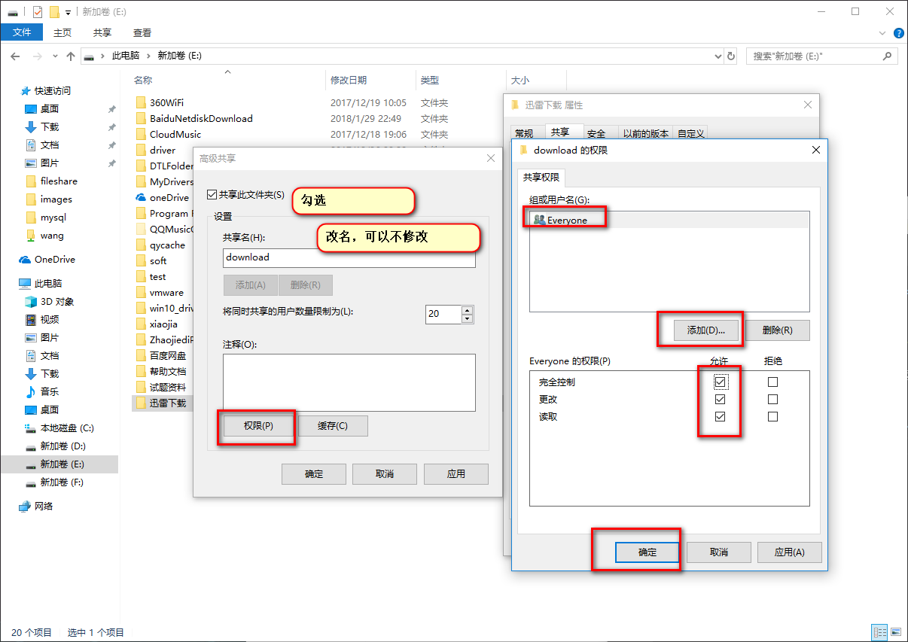
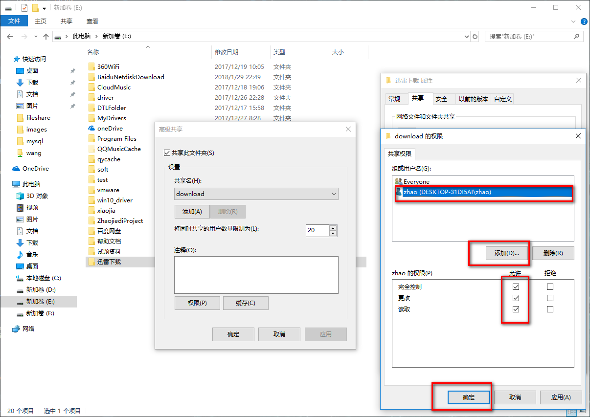
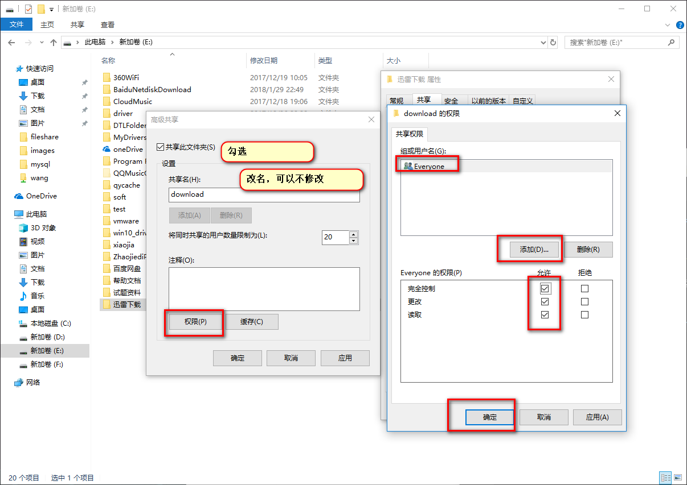
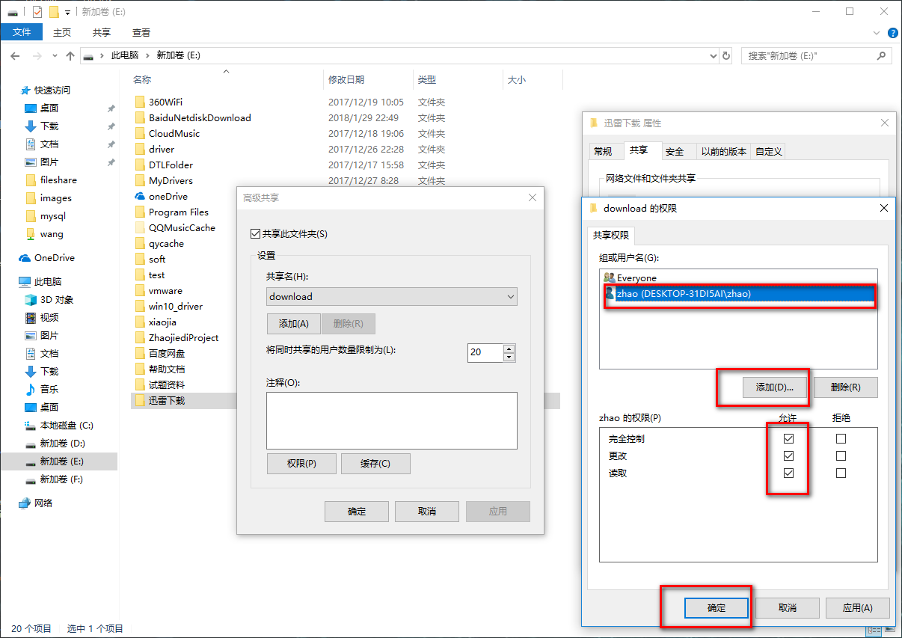
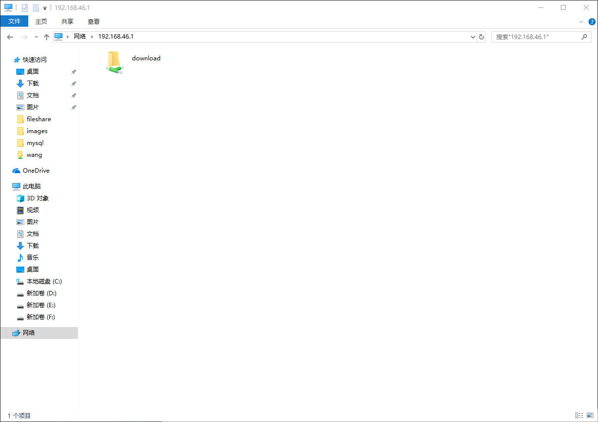

12.6. samba¶
12.6.1. windows共享给linux¶
我想把windows机器上’e:迅雷下载’共享出来给linux使用
12.6.1.1. 在window设置共享¶
 



12.6.1.2. 本机测试¶
12.6.1.3. linux挂载¶
[root@centos-155 ~]# yum install samba samba-client cifs-utils samba-common-tools
[root@centos-155 ~]# rpm -ql samba
[root@centos-155 ~]# rpm -ql samba-client
[root@centos-155 ~]# rpm -ql cifs-utils
[root@centos-155 ~]# smbclient -L 192.168.46.1 -m SMB2 -U zhao
Enter SAMBA\zhao's password:
Domain=[DESKTOP-31DI5AI] OS=[] Server=[]
Sharename Type Comment
--------- ---- -------
ADMIN$ Disk 远程管理
C$ Disk 默认共享
D$ Disk 默认共享
download Disk
E$ Disk 默认共享
F$ Disk 默认共享
IPC$ IPC 远程 IPC
Connection to 192.168.46.1 failed (Error NT_STATUS_RESOURCE_NAME_NOT_FOUND)
NetBIOS over TCP disabled -- no workgroup available
# 创建挂载密码
[root@centos-155 mnt]# echo -e "username=zhao\npassword=zhao" >> /etc/samba.pass
[root@centos-155 mnt]# cat /etc/samba.pass
username=zhao
password=zhao
[root@centos-155 mnt]# chmod 600 /etc/samba.pass
[root@centos-155 mnt]# vim -n 1 /etc/fstab
# 添加如下行
//192.168.46.1/download /mnt/zhao cifs vers=3.0,credentials=/etc/samba.pass 0 0
[root@centos-155 ~]# mount -a
[root@centos-155 ~]# cd /mnt/zhao
[root@centos-155 zhao]# touch test.txt
[root@centos-155 zhao]# ll
total 2528009
-rwxr-xr-x 1 root root 182 May 28 2015 autorun.inf
-rwxr-xr-x 1 root root 2588266496 Nov 19 22:42 cn_office_professional_plus_2016_x86_x64_dvd_6969182.iso
drwxr-xr-x 2 root root 0 Nov 19 22:44 office
-rwxr-xr-x 1 root root 413248 Aug 17 2015 setup.exe
-rwxr-xr-x 1 root root 0 Feb 6 10:19 test.txt
drwxr-xr-x 2 root root 0 Nov 19 21:24 下载合集
12.6.2. samba主要配置项¶
workgroup 工作组
server string 服务器字符串，支持宏定义
netbios name netbios名字和主机名无关
interface 监听的接口
host allow 允许的主机，支持多种格式
log file 日志文件，支持宏定义
max log size 最大日志文件， 超过这个数值就日志滚动日志
load printers 加载打印机
cups options 通用unix打印机选项
path 指定共享路径
Comment 共享描述
public 是否guest访问的共享，就是匿名可以访问
browsable 是否可以被浏览
writable 是否可写
readonly 是否只读和public只需要配置一个
write list 可写列表，支持用户和组，多个使用逗号分割。样例user1,@group2,+group3
valid users 特定用户才能访问
12.6.3. linux共享给window¶
12.6.3.1. linux配置¶
# 添加用户
[root@centos-155 mnt]# useradd panda1
[root@centos-155 mnt]# useradd panda2
[root@centos-155 mnt]# useradd panda3
[root@centos-155 mnt]# smbpasswd -a panda1
[root@centos-155 mnt]# smbpasswd -a panda2
[root@centos-155 mnt]# smbpasswd -a panda3
[root@centos-155 /]# groupadd panda
[root@centos-155 /]# usermod -aG panda panda1
[root@centos-155 /]# usermod -aG panda panda2
[root@centos-155 /]# usermod -aG panda panda3
# 配置文件编辑
[root@centos-155 mnt]# vim /etc/samba/smb.conf
[root@centos-155 mnt]# tail -n 6 /etc/samba/smb.conf
[pub]
comment= this is samba pub for windows
path = /data/samba
write list = panda1 ,panda2
valid users= +panda
# 启动服务并查看状态
[root@centos-155 mnt]# systemctl restart smb
[root@centos-155 mnt]# systemctl restart nmb
[root@centos-155 mnt]# netstat -tunlp |grep mb
tcp 0 0 0.0.0.0:139 0.0.0.0:* LISTEN 4584/smbd
tcp 0 0 0.0.0.0:445 0.0.0.0:* LISTEN 4584/smbd
tcp6 0 0 :::139 :::* LISTEN 4584/smbd
tcp6 0 0 :::445 :::* LISTEN 4584/smbd
udp 0 0 192.168.46.255:137 0.0.0.0:* 4596/nmbd
udp 0 0 192.168.46.155:137 0.0.0.0:* 4596/nmbd
udp 0 0 0.0.0.0:137 0.0.0.0:* 4596/nmbd
udp 0 0 192.168.46.255:138 0.0.0.0:* 4596/nmbd
udp 0 0 192.168.46.155:138 0.0.0.0:* 4596/nmbd
udp 0 0 0.0.0.0:138 0.0.0.0:* 4596/nmbd
# 创建目录并授权
[root@centos-155 mnt]# mkdir /data/samba -pv
[root@centos-155 /]# chown root.panda /data/samba/ -R
[root@centos-155 /]# chmod 2775 /data/samba/ -R
[root@centos-155 /]# echo "this is test" >> /data/samba/test.txt
[root@centos-155 /]# systemctl restart smb
[root@centos-155 /]# systemctl restart nmb
12.6.3.2. windows挂载¶


在window环境中，右键新建txt创建一个文件
在linux环境中，检查权限是否符合期望
[root@centos-155 /]# ll /data/samba
total 4
-rw-r--r-- 1 root panda 13 Feb 6 13:54 test.txt
-rwxr--r-- 1 panda2 panda 0 Feb 6 13:57 新建文本文档.txt
12.6.4. samba多用户挂载¶
默认samba是单用户挂载的。centos7中可以启用多用户挂载功能，在客户端登陆的不同用户访问 同一个samba的挂载点，获取不同的权限。
12.6.4.1. 服务端配置¶
[root@centos-155 /]# yum install samba
[root@centos-155 /]# mkdir /multiuser
[root@centos-155 /]# vim /etc/samba/smb.conf
# 添加下面几行
[smbshare]
path=/multiuser
writeable =no
write list= @admins
# 创建用户
[root@centos-155 /]# groupadd admins
[root@centos-155 /]# useradd -s /sbin/nologin smbuser1
[root@centos-155 /]# useradd -s /sbin/nologin smbuser2 -G admins
[root@centos-155 /]# useradd -s /sbin/nolgoin smbuser3 -G admins
[root@centos-155 /]# smbpasswd -a smbuser1
[root@centos-155 /]# smbpasswd -a smbuser2
[root@centos-155 /]# smbpasswd -a smbuser3
# 修改权限
[root@centos-155 /]# setfacl -m "u:smbuser1:rwx" /multiuser/
[root@centos-155 /]# setfacl -m "u:smbuser2:rwx" /multiuser/
[root@centos-155 /]# setfacl -m "u:smbuser3:rwx" /multiuser/
12.6.4.2. 客户端配置¶
[root@centos-152 ~]# yum install cifs-utils^C
[root@centos-152 ~]# mkdir /mnt/smb
[root@centos-152 ~]# echo "username=smbuser2" > /etc/multiuser
[root@centos-152 ~]# echo "password=panda" >> /etc/multiuser
[root@centos-152 ~]# cat /etc/multiuser
username=smbuser2
password=panda
[root@centos-152 ~]# chmod 600 /etc/multiuser
[root@centos-152 ~]# mount -o credentials=/etc/multiuser,multiuser //192.168.46.155/smbshare /mnt/smb
[root@centos-152 ~]# tail -n 1 /etc/mtab
//192.168.46.155/smbshare /mnt/smb cifs rw,relatime,vers=1.0,multiuser,cache=strict,username=smbuser2,domain=CENTOS-155,uid=0,noforceuid,gid=0,noforcegid,addr=192.168.46.155,unix,posixpaths,serverino,mapposix,acl,rsize=1048576,wsize=65536,echo_interval=60,actimeo=1 0 0
[root@centos-152 ~]# tail -n 1 /etc/mtab >> /etc/fstab
[root@centos-152 ~]# vim /etc/fstab
[root@centos-152 ~]# umount /mnt/smb
[root@centos-152 ~]# mount -a
[root@centos-152 ~]# mount |grep smb
//192.168.46.155/smbshare on /mnt/smb type cifs (rw,relatime,vers=1.0,cache=strict,username=smbuser2,domain=CENTOS-155,uid=0,noforceuid,gid=0,noforcegid,addr=192.168.46.155,unix,posixpaths,serverino,mapposix,acl,rsize=1048576,wsize=65536,echo_interval=60,actimeo=1)
12.6.4.3. 客户端测试¶
[root@centos-152 ~]# su - panda2
Last login: Tue Feb 6 15:06:44 CST 2018 on pts/0
[panda2@centos-152 ~]$ touch /mnt/smb/a.txt
touch: cannot touch ‘/mnt/smb/a.txt’: Permission denied
[panda2@centos-152 ~]$ cifs
cifscreds cifs.idmap cifs.upcall
[panda2@centos-152 ~]$ cifs
cifscreds cifs.idmap cifs.upcall
[panda2@centos-152 ~]$ cifscreds add -u smbuser2 192.168.46.155
Password:
[panda2@centos-152 ~]$ touch /mnt/smb/a.txt
[panda2@centos-152 ~]$ ll
total 0
[panda2@centos-152 ~]$ ll /mnt/smb
total 0
-rw-r--r-- 1 smbuser2 1014 0 Feb 6 15:07 a.txt
Note
上面的实验，能不能访问到samba的关键在于”cifscreds add -u smbuser2 192.168.46.155” 这个命令指定的用户，和当前登陆用户无关